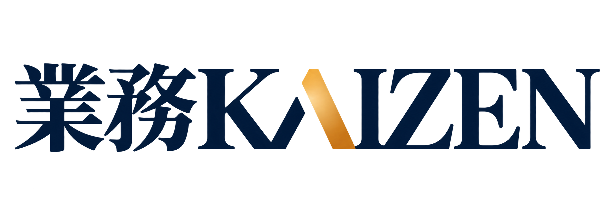

IT経営コンサルティング
会社の未来を、ITで実現する。
会社が目指す未来から逆算し、経営に必要なITのあり方を考えます。今ある人・IT・仕組みを生かしながら、必要な改善を設計し、実行から継続的な改善まで支援します。
無料診断設計Assessment実行支援運用支援継続KAIZEN

企業の成長を支えるITを、考えるところから実行・運用まで。
経営の目的や現在の体制に合わせて、必要な支援を選び、組み合わせることができます。戦略の相談からでも、日々の運用や具体的なプロジェクトからでも、ご一緒できます。
サービス一覧を見る必要な力を、必要な形でつなぐ。
KAIZEN SERVICES
会社が目指す未来と、日々の業務。二つの視点から、必要なITと仕組みを考え、実行と改善まで支援します。
IT経営コンサルティング
会社が目指す未来から逆算し、経営に必要なITのあり方を考えます。今ある人・IT・仕組みを生かしながら、必要な改善を設計し、実行から継続的な改善まで支援します。
IT MANAGEMENT KAIZEN
IT経営KAIZENは、企業が目指す未来を実現するために、ITのあり方を考え、必要な仕組みを整え、継続的に改善していくサービスです。
経営の目的や企業の状況に合わせて、改善計画の設計から、IT施策の実行、日々の運用まで支援します。
経営の目標と現状を整理し、取り組むべき課題、改善の方針、実行計画を明らかにします。
クラウド移行、システム導入、IT環境構築など、企業に必要な施策をプロジェクト単位で支援します。
社内ヘルプデスク、入退社対応、アカウント・ライセンス管理、定型インフラ・ネットワークの運用を、リモート中心のチーム体制で支援します。
実行した施策や日々の運用状況を振り返り、企業の成長や環境の変化に合わせて、次の改善につなげます。
Webシステム開発・業務自動化

今の業務を、そのままシステム化しません。仕事の流れを理解し、残すべき仕事と減らせる作業を整理するところから、必要なシステムの設計・開発・導入まで一貫して支援します。
SECURITY SERVICES
現状の可視化から管理体制、運用ルール、技術対策まで、企業に必要な範囲をご相談いただけます。
可視化・診断
自社の対策状況やリスクを把握し、次の対策を考える判断材料を提供します。
管理体制・対策支援
管理体制、運用ルール、必要な対策の整備を支援します。SCS評価制度への対応もご相談いただけます。
セキュリティについて相談する →DNSの段階で危険な接続先への通信を防ぐサービスです。
PPAPに代わる安全なファイル送受信サービスです。
ネットワークから端末まで複数の対策を組み合わせます。
「準備中」「検証中」のサービスは正式な外部提供を開始していません。提供内容と時期は確定次第ご案内します。
IT ADVISORY
中小企業向け月額IT相談
ITの専任担当者がいない中小企業向けに、日々のITに関する疑問、製品選定、AI活用、セキュリティ対策などについて相談できる窓口を提供します。定型作業は必要に応じて別途ご依頼いただけます。
カジュアルコンサルについて相談する →まず経営の方向性から考えることも、既存の情報システム部門に参画することも、具体的な移行・構築から始めることもできます。
社内の担当者やすでに関わっているベンダーを尊重し、必要なところで役割を担います。
支援実績を見る